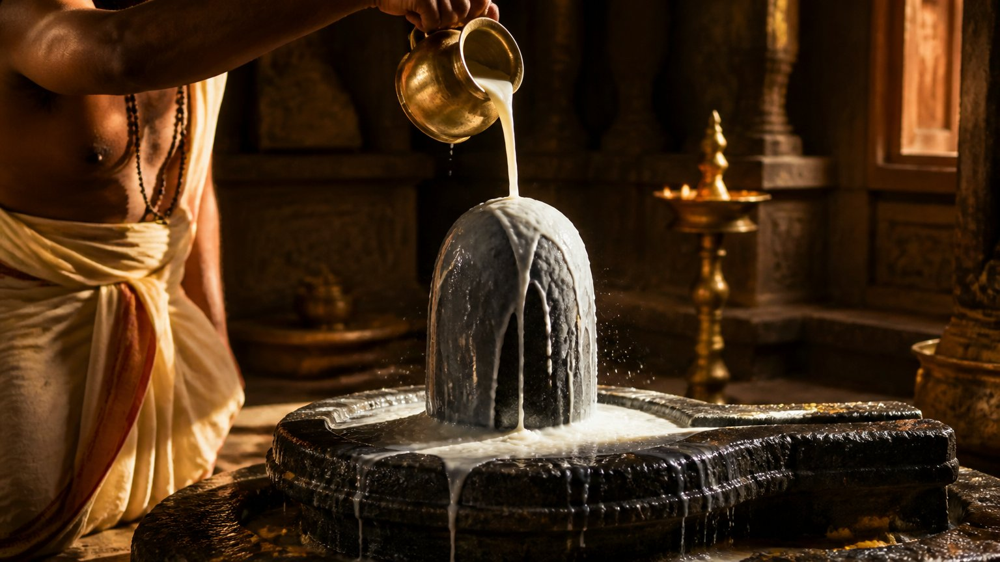
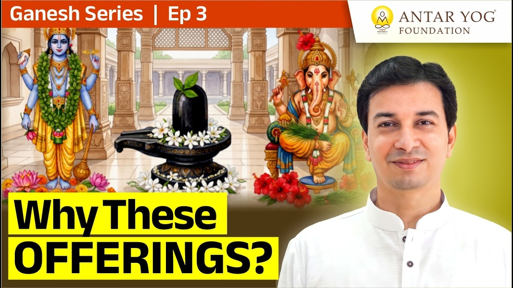

क्या भगवान भी अपनी पसंद चुनते हैं?
पूजा की थाली सजाते समय कभी ध्यान दिया है? भगवान विष्णु को तुलसी पत्र, भगवान शिव को बिल्व पत्र, और भगवान गणेश को दूर्वा।
हर भगवान की अपनी अलग पसंद। तो क्या हम किसी बाज़ार में बैठे हैं, जहाँ कोई कहे, "मुझे यह चाहिए, मुझे वह चाहिए"?
यदि आपका बच्चा आपसे पूछे कि ऐसा क्यों है, तो क्या आपके पास उत्तर है?
बच्चों का बँटवारा या गहरा रहस्य?
सोचिए, जैसे छोटे बच्चे आपस में झगड़ते हैं और हम उन्हें बाँट देते हैं: "तू यह वस्त्र ले, तू दो मिठाइयाँ ले, शांत बैठो, झगड़ा मत करो।"
क्या देवताओं के बीच भी ऐसा ही बँटवारा हुआ है? "तू दूर्वा ले, तू बिल्व पत्र ले"? ऐसा नहीं हो सकता।
इसके पीछे एक प्रतीकात्मक विज्ञान (symbolic science) है।
हर वस्तु में ऊर्जा है
हर वस्तु एक ऊर्जा प्रसारित करती है। रंग भी ऊर्जा है। और ऊर्जा को एक रूप से दूसरे रूप में बदला जा सकता है।
कुछ ध्वनियाँ हैं, मंत्र हैं, उनमें भी ऊर्जा है। और जो वनस्पतियाँ हम अर्पित करते हैं, उनमें भी एक प्राण-शक्ति (life force energy) है।
यह ऊर्जा उस परिणाम से मेल खाती है, जो आप चाहते हैं। गणेश जी की आराधना यानी बुद्धि की चाह। और बुद्धि के लिए जो स्पंदन, जो ऊर्जा का स्तर चाहिए, उसका अपना एक गणित है, अपना विज्ञान है।
चमत्कार नहीं, विज्ञान
आज यदि यह सब पूरी तरह समझ में न आए, तो चिंता मत कीजिए। गहन, व्यक्तिगत कक्षाओं में विज्ञान-युक्त पद्धति से, एक-एक कदम चलकर, आप ज्ञानी बनते हैं।
श्रीकृष्ण कहते हैं, ज्ञानी को मोक्ष (liberation) मिलता है। वह परम मोक्ष तो बाद में आएगा, पर उससे पहले आपके संकटों से मुक्ति तुरंत आरंभ हो जाती है।
आचार्य जी कहते हैं कि वे यह दावा नहीं करते कि चमत्कार होता है, बल्कि उसके पीछे का विज्ञान बता देते हैं।
विज्ञान में क्या होता है? बटन दबाओ, तो पंखा चलना ही चाहिए। वैसे ही, सही कर्म करो और उसे जान लो, तो परिणाम आना ही चाहिए।
पहले भगवान को जानो, फिर पूजा को
पहला चरण है अपने भगवान को जानना। अगला चरण है पूजा को जानना। जो अर्पित किया, वह क्यों किया?
"वस्त्रं समर्पयामि" का अर्थ क्या है? "पञ्चामृत स्नानं समर्पयामि" का अर्थ क्या है? दूध, दही, घी, शहद से स्नान, और फिर "शुद्धोदक स्नानं समर्पयामि"।
मूर्ति तो धातु या पत्थर की है। उसे स्नान की क्या आवश्यकता? फिर स्नान क्यों कराया?
क्या आपने कभी अपने किसी पूजा-विधान का अर्थ पूछा है?
अभिषेक: कोई साधारण स्नान नहीं
हम अभिषेक करते हैं, फव्वारे की तरह जल डालते रहते हैं। पर क्या कभी पूछा कि क्यों?
अभिषेक शब्द दो स्थानों पर प्रयोग होता है। एक, भगवान पर अभिषेक। और दूसरा, राज्याभिषेक, यानी राजा का। राजा पर भी अभिषेक होता है और भगवान पर भी।
आचार्य जी बताते हैं कि यह शब्द साधारण नहीं है और यह साधारण स्नान नहीं है। इसमें कुछ तो प्रतीकात्मक होगा, बहुत गहरा प्रतीक होगा।

पूगीफल और ताम्बूल क्यों?
पूजा में पूगीफल (सुपारी) और ताम्बूल (पान) रखे जाते हैं। क्यों? इनका क्या अर्थ है?
कितने लोग सचमुच जानते हैं? स्वयं से सच-सच पूछिए।
क्या आप वह रूप बन सकते हैं?
हर भगवान के जो गुण हमें चाहिए, उन्हीं के अनुसार उनका रूप रचा गया होगा। यदि वह समझ में न आए, तो केवल प्रतीक लेकर क्या करेंगे? न नाम का पता, न कुछ और, केवल एक चित्र।
क्या आप स्वयं उस रूप को अपने भीतर जी सकते हैं?
मुख्य बातें
- हर देवता को अलग अर्पण, जैसे विष्णु को तुलसी, शिव को बिल्व पत्र, गणेश को दूर्वा, के पीछे प्रतीकात्मक विज्ञान है।
- रंग, ध्वनि, मंत्र और वनस्पति, सबमें ऊर्जा है, और यह ऊर्जा इच्छित परिणाम से मेल खाती है।
- ज्ञान से मोक्ष मिलता है, पर उससे पहले संकटों से मुक्ति तुरंत आरंभ हो जाती है।
- पहले अपने भगवान को जानें, फिर पूजा के हर चरण का अर्थ।
- अभिषेक साधारण स्नान नहीं, राज्याभिषेक जैसा गहरा प्रतीक है।
- भगवान का रूप उन गुणों का प्रतीक है जो हमें अपने भीतर चाहिए।
